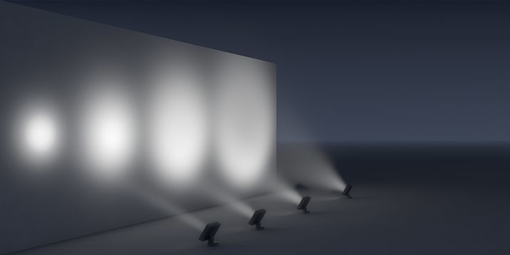

This type of lighting imparts drama and character and allows certain features regarded of interest to be highlighted. The idea is to draw the viewer’s attention to the item that is lit, whether a feature wall, an ornamental pool or an expensive vase.
इस प्रकार की प्रकाश व्यवस्था नाटक और चरित्र प्रदान करती है और रुचि के अनुसार कुछ विशेषताओं को उजागर करने की अनुमति देती है। यह विचार दर्शकों का ध्यान उस वस्तु की ओर आकर्षित करने के लिए है जो जली हुई है, चाहे एक फीचर दीवार, एक सजावटी पूल या एक महंगा फूलदान।
